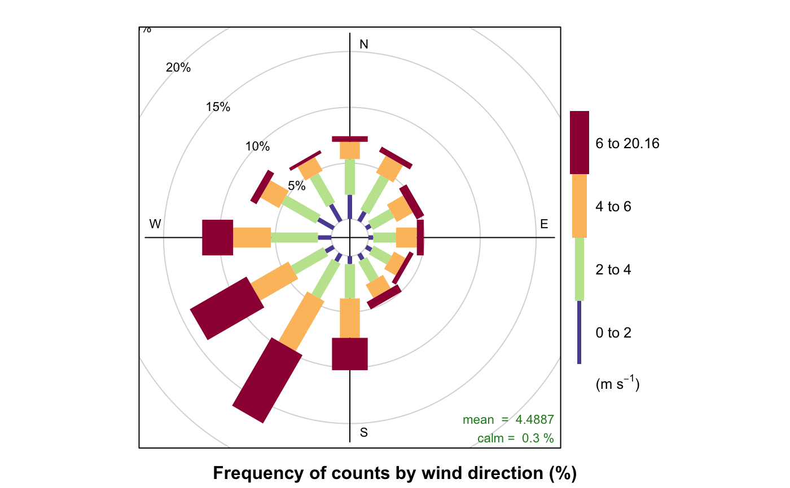
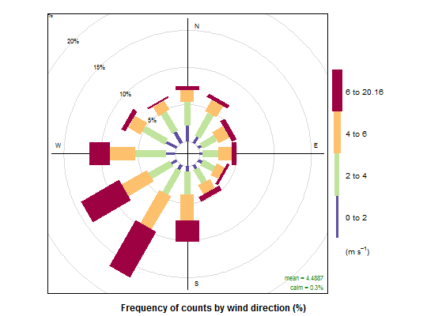
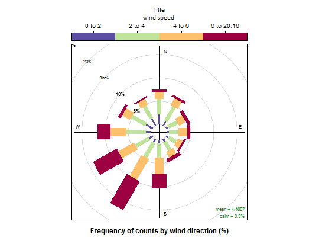

General function for producing scale keys for other openair functions. The function is a crude modification of the draw.colorkey function developed by Deepayan Sarkar as part of the lattice package, and allows additional key labelling to added, and provides some additional control of the appearance and scaling.
drawOpenKey(key, draw = FALSE, vp = NULL)
| key | List defining the scale key structure to be produced. Most
options are identical to original Original Note: Additional options include:
Notes: |
|---|---|
| draw | Option to return the key object or plot it directly. The default, FALSE, should always be used within openair calls. |
| vp | View port to be used when plotting key. The default, NULL, should always be used within openair calls. (Note: |
The function is a modification of lattice::draw.colorkey and
returns a scale key using a similar mechanism to that used in in the
original function as developed by Deepayan Sarkar.
The drawOpenKey function produces scale keys for other openair
functions.
Most drawOpenKey options are identical to those of
lattice::draw.colorkey. For example, scale key size and position
are controlled via height, width and space. Likewise,
the axis labelling can be set in and formatted by labels. See
draw.colorkey for further details.
Additional scale labelling may be added above and below the scale using
header and footer options within key. As in other
openair functions, automatic text formatting can be enabled via
auto.key.
(Note: Currently, the formatting of header and footer text
are fixed to the same style as labels (the scale axis) and cannot be
defined locally.)
The relationship between header, footer and the scale key
itself can be controlled using fit options. These can be set in
key$fit to apply uniform control or individually in
key$header$fit and/or key$footer$fit to control locally.
The appearance of the scale can be controlled using plot.style.
We gratefully acknoweldge the considerable help and advice of Deepayan Sarkar.
Deepayan Sarkar (2010). lattice: Lattice Graphics. R package version 0.18-5. http://r-forge.r-project.org/projects/lattice/
Functions using drawOpenKey currently include
windRose, pollutionRose.
For details of the original function, see draw.colorkey
#adding text and changing style and position via key #note: #some simple key control also possible directly #For example, below does same as #windRose(mydata, key.position="right") windRose(mydata, key =list(space="right") )#however: #more detailed control possible working with #key and drawOpenKey. For example, windRose(mydata, key = list(header="Title", footer="wind speed", plot.style = c("ticks", "border"), fit = "all", height = 1, space = "top") )